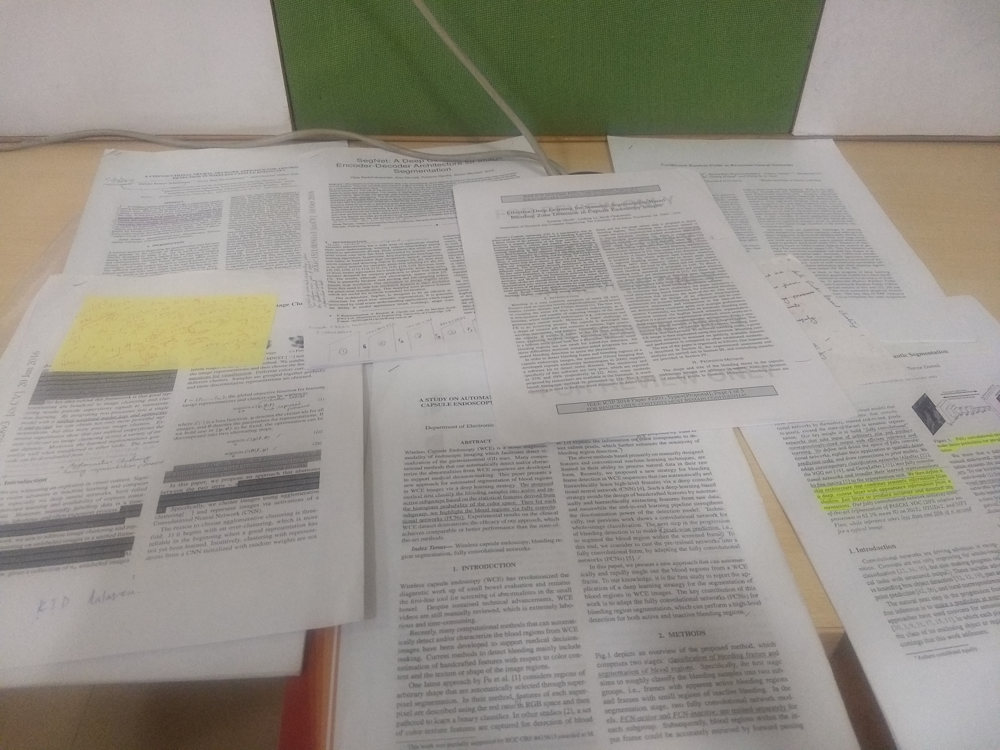

My Tech Story: My fascination with Computer Vision

Aimed at mimicking human visual systems, Computer Vision gained popularity as an interdisciplinary domain to bolster intelligent systems in understanding the real world, visually. With the goal of automating tasks pertaining to human visual perception, AI enthusiasts are working at understanding the full, 3 dimensional scene. I foresee AI coupled with CV to be a transformational game changer, revolutionising the way in which a machine interprets visual data surpassing human agility. From Larry Robert’s Thesis,’Machine perception of 3-D solids’, to a new image database by Stanford AI Lab-‘Visual Genome’, engineers are working at integrating the comprehension of the 3D world and associated visual semantics to link visual perception to cognition. Modern era science has embraced the concepts of Computer Vision for wider application, in both academia and the industry. Healthcare, robotics, media, marketing, AR, VR, fashion, farming, security and photography are some of them.
Disney animated movies have intrigued me since my childhood days; as a student, my ‘extra- activity’ classes were spent introspecting how accurate voice syncing was possible in animated movies and how 2D sketches could lead to such fluid movements. As a consequence, I started appreciating aspects of motion, with vision. With the release of Ratatouille, the idea of imagineering fuelled my passion of wanting to delve deeper into the concepts supporting such an ideology. As an image processing enthusiast in my freshman year, I took it upon myself to self-learn a domain that was not in the scope of my undergraduate curriculum. Towards the end of my sophomore year at college, I was offered an internship to work on ‘Transliteration of Kannada Text in a Camera Captured Scene Image on an Android Platform’ at IISc. My first internship under Prof. KR Ramakrishnan, was an eye-opener to realising that we’re heading towards an AI powered future. I had a latent desire to add a ‘learning’ aspect to my image processing ventures so that I could bridge my knowledge-base to building AI based cognitive solutions. With this background, I opted for a Machine Learning minor at college.
I worked on a project termed, ‘Steerable Fast Bilateral Edge Detectors’ as a part of my internship at IISc, in 2017. During the course of my internship, I developed two new algorithms namely- fast bilateral edge detection and steerable fast bilateral edge detection. The bilateral filter can be modified to an edge detector, on modifying the Gaussian domain and range kernels. Although several techniques have been used to obtain computationally fast bilateral filters, I implemented an algorithm having a reasonable trade-off between image accuracy and computational time. The concepts of fast bilateral filters had been coupled with bilateral edge detectors to design a fast bilateral edge detector. I proposed a noise-robust and computationally efficient algorithm for steerable fast bilateral edge detection using the concepts of steerability, edge detection via bilateral filters and fast bilateral filtering using Fourier kernels. Simulation results along with the peak signal to noise ratio for various noisy and noise-free gray-scale images were presented by me. The algorithms were aimed at footpath edge detection.
My current work comprises classification, semantic segmentation, instance segmentation and clustering the abnormalities present in wireless capsule endoscopy (WCE) images. We consider analyzing results in different colour spaces, data sugmentation methods, patching and coupling traditional clustering algorithms with DNNs for joint unsupervised learning.
As an extension of my research work during my first internship, I am working towards developing Android transliteration apps for various Indic languages in scene images. The concept can be applied to translation apps for tourists or non-native individuals (capturing text on sign boards and shops) and E-learning apps for those who wish to learn a new language. Also, an English to Kannada transliteration application will help in educating native speakers.
My constant brainstorming over problems of mathematics and physics in my high school days placed me firmly on the path of the conviction that, “if you change the way you look at things, the things you look at will change”. Meaning hereby, possibilities (solutions) do exist and, one has to scratch the layers in different ways and invent the gateways to these possibilities. This realisation, as a matter of fact, came about from my relentless pursuit of self learning. Forever, my mind is exploring new ideas and, in the process I learnt to rise above complexities to form my own perspectives and get faster grasp of new concepts. I love to launch new ideas and express myself at length. I love to provide leadership and be a frontrunner in actions too. I have developed the art of correlating concepts and integrating them to build concise solutions; I am confident that my contribution will benefit the ongoing Deep Learning and Computer Vision research communities.
Return